כתבי הרב
הערה חשובה: צוות האתר אינו קשור לחנויות הספרים ואינו אחראי על נכונות המידע המופיע בקישורים לחנויות. רשימת הספרים המובאת להלן מרוכזת לנוחיות הציבור בלבד ואינה מהווה בהכרח רשימה מלאה של כל החנויות המשווקות את הספרים. אתר זה הינו ללא כוונת רווח ואינו שותף למכירה.
סדרת "אורות חיים"
|
אורות חיים דברים רכישה קריאה |
אורות חיים שמות רכישה קריאה |
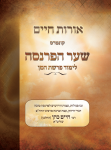 אורות חיים קונטרס שער הפרנסה רכישה קריאה |
אורות חיים פורים רכישה |
| |||
|
אורות חיים אגרת הקודש וסדר קרבן פסח רכישה קריאה |
סדרת "טללי חיים"
לאתר ההוצאה לאור|
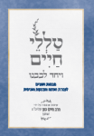 טללי חיים ויחד לבבנו רכישה |
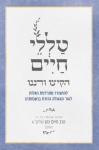 טללי חיים הקיצו ורננו רכישה |
טללי חיים אנא בכח רכישה |
|
|
טללי חיים אלול/תשרי רכישה |
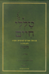 טללי חיים סוכות רכישה |
טללי חיים פסח רכישה |
| |||
|
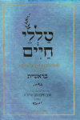 טללי חיים בראשית רכישה |
טללי חיים שמות רכישה
|
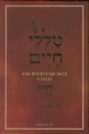 טללי חיים ויקרא רכישה |
טללי חיים במדבר רכישה |
ספרי הרב שלמה בצרי שליט"א
|
אור ימי ספירת העומר וחג השבועות רכישה |
אור ימי הפסח רכישה |
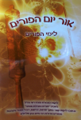 אור יום הפורים רכישה קריאה |
מלך חפץ בחיים לימים הנוראים רכישה קריאה |
אור פני חיים
|
אור פני חיים בראשית, שמות, ויקרא רכישה |
כתבי הרבנים המקובלים זי"ע אבותיו של הרב שליט"א
הרב אליהו בן אברהם שלמה הכהן האתמרי
|
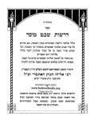 דרשות שבט מוסר קריאה
|
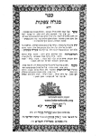 מגלה צפונות ח"א קריאה |
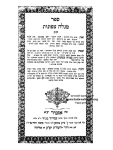 מגלה צפונות ח"ב קריאה |
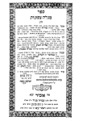 מגלה צפונות ח"ג קריאה |
|
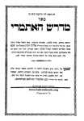 מדרש האתמרי קריאה
|
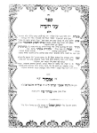 עיני העדה קריאה |
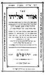 אזור אליהו קריאה |
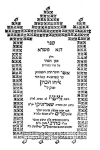 דנא פשרא [אגן הסהר] קריאה |
|
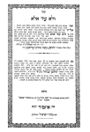 ולא עוד אלא קריאה
|
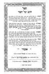 חוט של חסד קריאה |
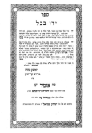 ידו בכל קריאה |
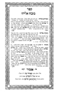 מזבח אליהו קריאה |
|
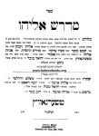 מדרש אליהו קריאה
|
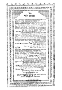 סמוכים לעד קריאה |
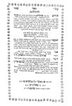 תהלות ה' קריאה |
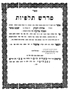 מדרש תלפיות קריאה |
|
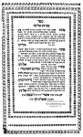 מנחת אליהו קריאה
|
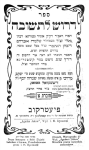 דרוש לתשובה קריאה |
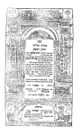 אגדת אליהו ח"א קריאה |
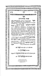 אגדת אליהו ח"ב קריאה |
|
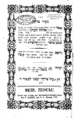 מעיל צדקה קריאה
|
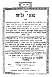 מעשה אליהו (אידיש) ליקוטים מ- "שבט מוסר" קריאה
|
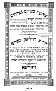 שלשה ספרים נפתחים (אידיש) ליקוטים מ- "שבט מוסר" קריאה
|
סדר הנהגות הנשים (אידיש) ליקוטים מ- "שבט מוסר" קריאה
|
|
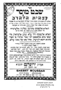 שבט מוסר (ערבית) בתרגום הרב שאול דויך הכהן קריאה
|
מעשה הרוח (לאדינו) ליקוטים מ- "מנחת אליהו" קריאה
|
הרב אהרון בן חיים אברהם הכהן פרחיה
|
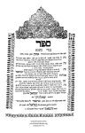 בגדי כהונה קריאה
|
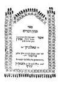 זכרון דברים קריאה |
פרח מטה אהרון א-ב קריאה |
הרב יהושע בן אהרון הכהן פרחיה
|
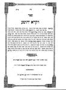 ויקרא יהושע קריאה
|
הרב חסדאי בן שמואל הכהן פרחיה
|
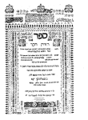 תורת חסד קריאה
|